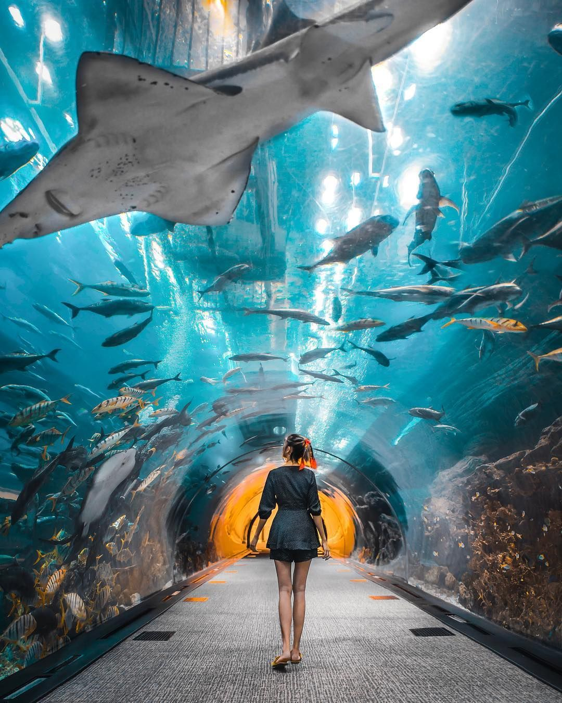
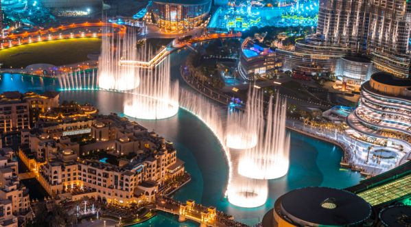
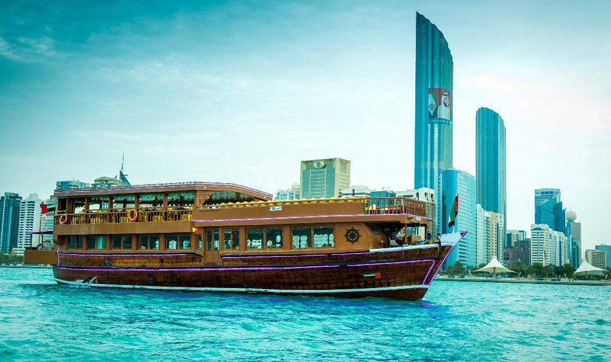

Fun things to do in UAE
Burj Khalifa, Dubai

Admittedly the most popular sights in Dubai, if not the whole of the UAE, the Burj Khalifa currently holds the title of the world’s tallest building. A sight to behold as it rises skyward, , the tower has 160 floors with two observation decks offering unparalleled views of the Persian Gulf. You can take the elevator up to either one of the public decks, or the restaurant on the 122nd floor. An architectural marvel, the tower is brilliantly lit up at night and makes for amazing pictures, if you can manage to capture all of it within one frame!
Palm Jumeirah, Dubai

Laid out in the clear blue waters of Dubai and shaped like a palm are Dubai’s artificial islands of Palm Jumeirah. high-end hotels, restaurants, and residences dot the area of this vast island , which is connected to the mainland via a modern tram system. The island is often best viewed during skydiving, or on a boat tour around it.
Dubai Aquarium, Dubai

Housed within the upscale Dubai mall is a splendid attraction – the Dubai Aquarium. One of largest of its kind, this aquarium has hundreds of species of fish, sharks and stingrays contained in an underwater living environments and The design replicates an ocean bed and has some truly unique creatures that are well preserved in an aquatic setting.
Dubai Fountain, Dubai

At the base of the Burj Khalifa, within the Dubai Mall, is the spectacular Dubai Fountain with its dancing spurts of water, dazzling lights and melodious music. This attraction keeps visitors enthralled every evening in an outdoor setting for almost half an hour and is regarded as the tallest performing fountain in the world. To get a close-up view, you can hop on a boat that puts you in the eye of the spectacle, or stroll along the newly added boardwalk .
River Cruise, Dubai and Abu Dhabi

As you bob along the Dubai or Abu Dhabi river on a beautifully lit up cruise ship, you can set your sights on some of the city’s architectural landmarks and historic structures. The Dinner or Dhow Cruise as it’s locally referred to, is a relaxing 3-hour night time ride that weaves in and out of the city. You will have access to a lavish buffet dinner, along with live music and a great ambiance .